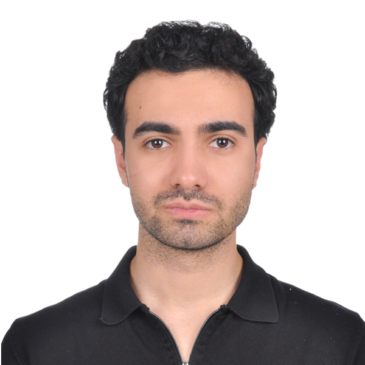

Software Engineer

I build reliable systems where strong engineering meets intelligent software — from model satellites to on-chain apps.
Computer engineer specializing in software development and artificial intelligence — focused on building reliable, efficient systems that pair intelligent solutions with disciplined programming practices.
B.Sc. Computer Engineering · GPA 3.90
Specializing in software development and artificial intelligence.
Middle School & High School
Foundational education and languages.
1st Foundation Universities · 4th Worldwide — CANSAT 2025
As Software Team Lead, I developed the embedded software and designed the ground control interface for our model satellite in the CANSAT Competition 2025, organized by the American Astronautical Society and sponsored by NASA. Beyond leading software architecture and ensuring real-time system integration, I directly contributed to coding, testing, and implementing mission-critical functionality. During the two-week on-site field testing campaign in the United States, I supervised integration while refining the software for optimal performance. Our team ranked first among foundation universities and fourth worldwide.
1st Place — Cursor Ankara Hackathon: Blockchain Edition
A Web3 "stake-to-fit" platform built in 5 hours. Users stake SOL and earn rewards by completing verified workouts. Real-time exercise detection runs on MediaPipe AI, while smart contracts written in Rust with the Anchor framework manage on-chain reward distribution on Solana. The React frontend communicates with the blockchain via Web3.
Multimodal · LLM Reasoning
Built the LLM reasoning component of a multimodal elderly-care system, designing Turkish conversational prompts and structured JSON outputs for daily-routine and health inference.
Machine Learning · NLP
A machine-learning system analyzing Bitcoin tweet sentiment and its correlation with price trends — preprocessing datasets, training predictive models, and shipping a real-time sentiment analysis app that also assesses user influence on market predictions.
Model Satellite · Embedded + GUI
Part of a multidisciplinary university team developing a model satellite for TEKNOFEST. My role covers GUI design and embedded code implementation as we prepare a competitive satellite model.
Candidate Engineer · Sep 2025 – Present
Embedded systems and C++ development for Qt-based desktop applications — designing, implementing, and maintaining software components used in defense and space technologies.
Intern · Aug 2025 – Sep 2025
Embedded software development and testing in the REHIS department. Contributed to hardware– software integration on STM32 microcontrollers and built a custom I2C communication protocol between STM boards.
Intern · Jun 2024 – Jul 2024
Developed complete firmware for an ESP32-based IoT device — sensor data collection, wireless communication, and OTA updates — plus a Node.js server interface for HTTP firmware updates with JSON version comparison.
Undergraduate Assistant · 2023 – 2025
Supported students through C programming labs, providing guidance and grading assignments.
Intern · Jan 2024 – Feb 2024
Built a personal CV website in React during a web development internship, strengthening front-end skills and project management experience.
Chairman of the Board · 2024 – 2025
Led Çankaya University's Computer Engineering Society — organizing events and seminars, coordinating with companies and sponsors, and driving team coordination.
Let's build something reliable.
ulasucrak@gmail.com